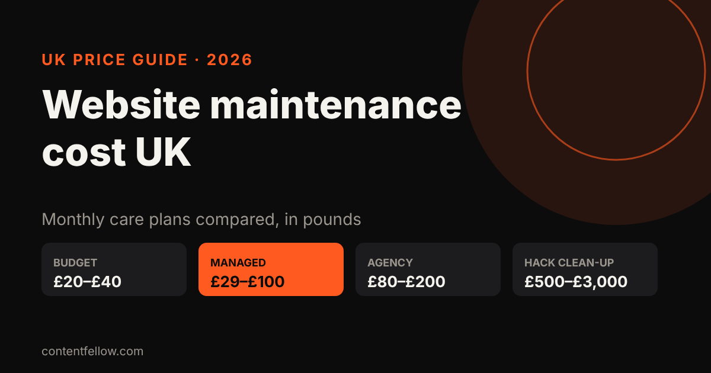
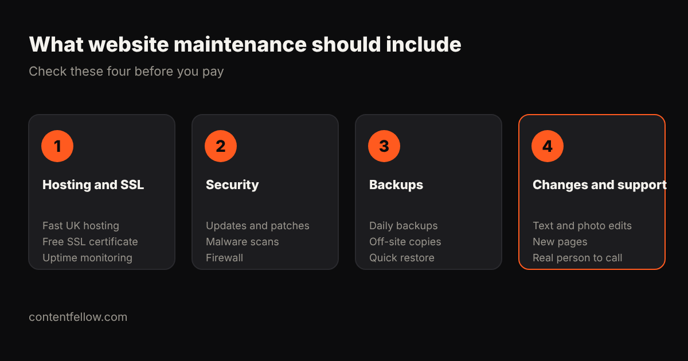

Website Maintenance Cost UK: What Small Businesses Pay in 2026
Quick answer: UK website maintenance usually costs £29 to £100 a month for a small business on a managed plan, £20 to £40 for budget automated plans, and £80 to £200 with a local agency. Small online shops typically pay £99 to £250 a month. Skipping maintenance is a false economy: cleaning up a hacked site costs £500 to £3,000. (UK prices, October 2026.)

How much does website maintenance cost per month?
| Plan type | Typical UK cost | What you usually get |
|---|---|---|
| Budget / automated | £20–£40 a month | Automatic updates, shared hosting, slow email support |
| Entry managed | £29–£59 a month | Hosting, daily backups, uptime monitoring, SSL |
| Standard professional | £59–£100 a month | Priority support, security monitoring, small changes |
| Local agency retainer | £80–£200 a month | Named contact, content updates included |
| Small online shop | £99–£250 a month | All of the above plus checkout and plugin testing |
| Ad-hoc fixes | £50–£300 per job | Pay when something breaks |
Sources: WebPulse Lab's 2026 UK guide puts most small business sites at £29–£100 a month and small ecommerce at £99–£250. UK IT Services says most small businesses sit at £75–£150 a month, and that cleaning a hacked site costs £500–£3,000.

What should website maintenance include?
- Hosting and SSL: fast UK hosting, a free SSL certificate and uptime monitoring.
- Security: software updates, malware scans and a firewall.
- Backups: daily, stored off-site, with a quick restore when needed.
- Changes and support: text and photo edits, small new sections, and a real person to contact.
If a plan doesn't say how many changes you get each month, ask. That's where cheap plans cut corners.
Is website maintenance worth it for a small business?
Usually, yes. Doing it yourself means paying separately for hosting (£15–£30 a month), backup and security plugins, plus your own time. One hack or broken update can cost more than a year of care.
You can skip a paid plan if your site is on a builder like Wix or Squarespace that handles hosting and security for you, and you're happy making your own edits.
ContentFellow website care plans
| Plan | Price | Includes |
|---|---|---|
| Care | £49 a month | Hosting, SSL, security, backups, updates, 1 small change a month |
| Build Fellow | £69 a month | Everything in Care plus a 5-page custom website and 2 changes a month |
| Care Plus | £159 a month | 5 changes a month, a new page monthly, SEO and speed checks, priority support |
All plans are monthly. We also look after sites we didn't build. See all management plans →
Need a new site first? One-off builds start at £349.
Frequently asked questions
How much does website maintenance cost in the UK?
Most UK small businesses pay £29 to £100 a month for a managed plan. Budget plans start around £20, and local agencies charge £80 to £200 a month.
What does website maintenance include?
Hosting, SSL, software updates, security scans, daily backups, uptime monitoring and a set number of content changes each month.
How much does ecommerce website maintenance cost?
Small UK online shops typically pay £99 to £250 a month because checkouts, payments and plugins need more testing.
Can I maintain my own website?
Yes, if you're comfortable with updates, backups and security. Budget for hosting and plugins and your own time, and have someone to call if it breaks.
What happens if I don't maintain my website?
Outdated software is the most common way sites get hacked. Clean-up typically costs £500 to £3,000, plus lost sales while the site is down.
Sources: WebPulse Lab, UK IT Services, CenoDigital website maintenance guides (2026). Last updated 17 October 2026.